PureEQDesigned and built · 15 min read
An equaliser you set by listening, not by guessing at sliders.
PureEQ is an Android app I designed and built on my own. A two-minute listening check and a few blind A/B rounds on music become one EQ curve for each ear, played on everything the phone plays.
- Role
- Design and build, solo
- Why
- My own idea: sound tuned to the listener and the headphones, on any Android phone
- Platform
- Android 9 and later, native app
- Stack
- Kotlin, Jetpack Compose, Material 3, Android's DynamicsProcessing audio effect
- Timeline
- 29 October to 3 November 2026
- Status
- Version 1.7.3, a download that updates itself. Accuracy shown only in simulation. Not a medical device
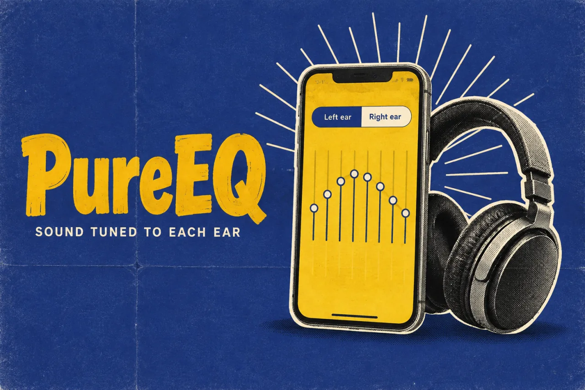
In short
- The problem: an equaliser gives you ten sliders and asks which to move. Most people cannot answer that, and the right answer depends on their ears and their headphones.
- What I built: an Android app that asks two easier questions, "did you hear that beep?" and "which of these do you prefer?", and turns the answers into one EQ curve per ear for all audio on the phone.
- The key idea: keep the answers, not the curve. Every curve is worked out again from stored answers, so when I improved the maths, saved profiles got better with no new test.
- Where it stands: version 1.7.3, built in six days, with 141 automated tests. Its accuracy figures come from simulated listeners. I have no listening tests with other people and no install numbers.
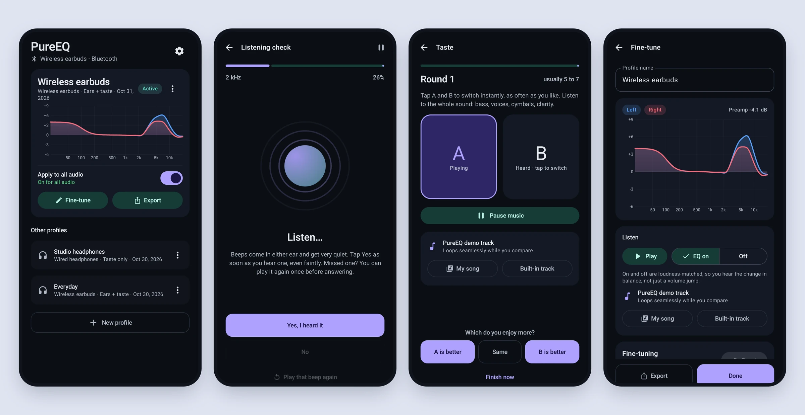
01 Why I built it
Ten sliders ask a question most people cannot answer
An equaliser, or EQ, changes how loud each part of the sound is, from deep bass to high treble. The usual EQ app on a phone is a row of sliders, each for one range of pitches.
It assumes you already know which pitches to change. The right setting depends on two things the sliders cannot see. One is your ears, which may hear some pitches less well than others, and differently on the left and right. The other is your headphones, which all colour the sound in their own way.
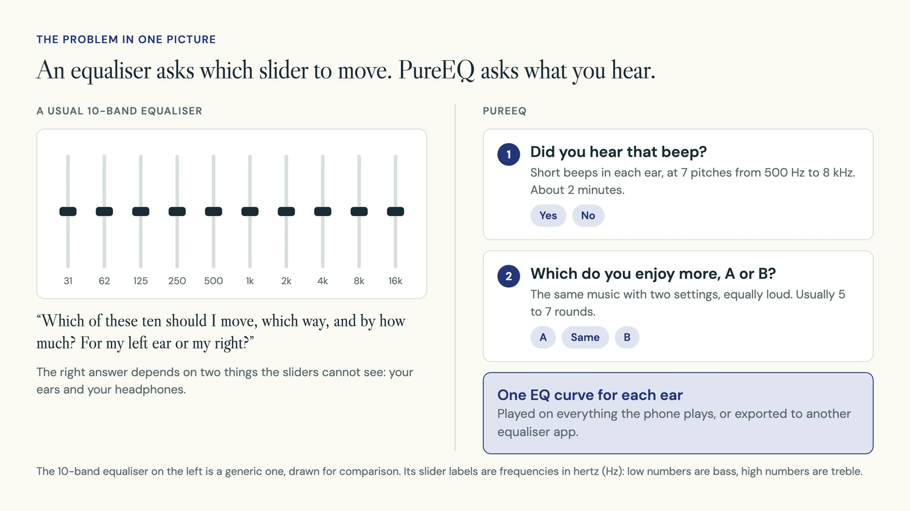
Some phone makers build a feature like this into their own phones and earbuds. I wanted it on any Android phone from Android 9 on, with any headphones.
02 How it works
Two questions, about five minutes, one curve per ear
A profile is made for one pair of headphones. Five setup steps make the answers trustworthy. Then come the two questions, and then the result.
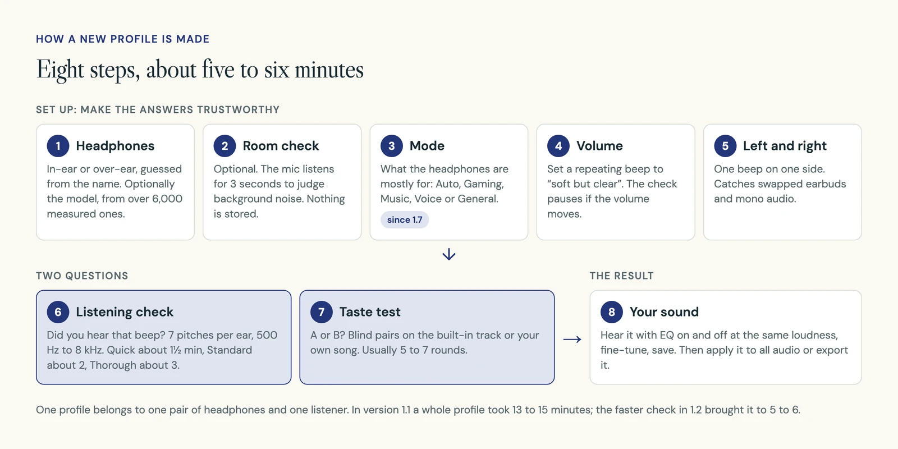
The setup steps each guard against a known way for the result to go wrong. A noisy room hides quiet beeps. A volume change halfway shifts every answer. Swapped earbuds flip the two ears.
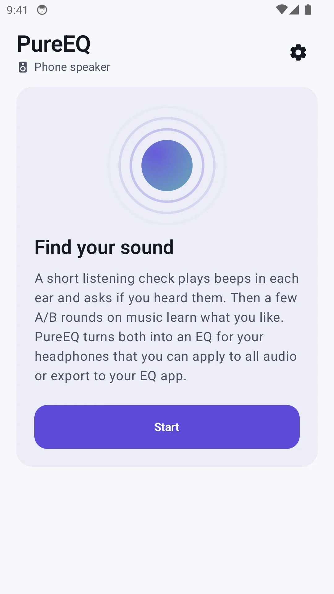
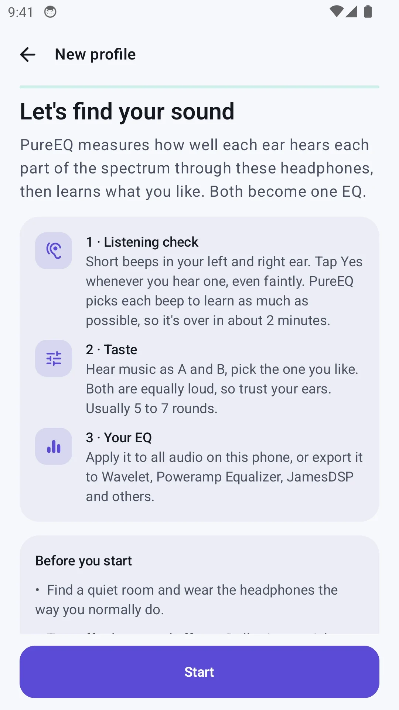
These two captures come from version 1.5.2 in an Android emulator. The rest of the screens on this page are the Play Store screenshots I made for version 1.6.
03 Decision 1
A check that picks each beep finishes in about two minutes
What you see: one beep at a time, in one ear, and a big Yes button. You never see how loud the beep is.
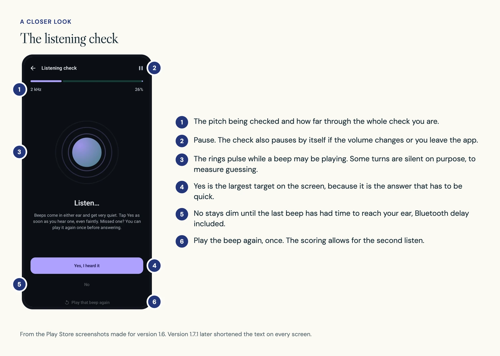
In the build: version 1.1 used a staircase, the classic method. It turns the beep down after a Yes and up after a No, over and over. It needed about 150 answers and over six minutes.
In 1.2 I replaced it with a Bayesian test. That means it keeps a running best guess of your ears, with how sure it is, and updates the guess after every answer. Each next beep is the one expected to teach it the most. All seven pitches and both ears share one guess, so an answer at 2 kHz also says something about 3 kHz.
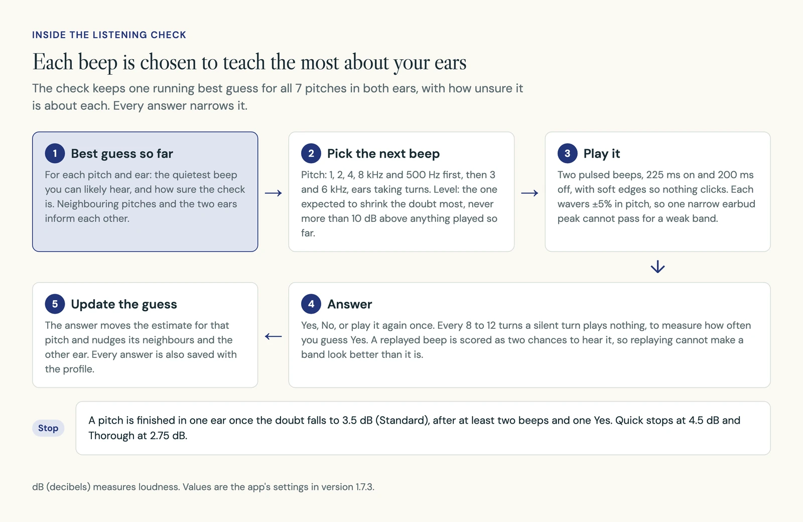
Small details carry a lot of the accuracy. The beeps waver slightly in pitch, so a narrow peak in an earbud cannot pass for a weak band. The No button waits for Bluetooth delay, which can be a quarter of a second or more.
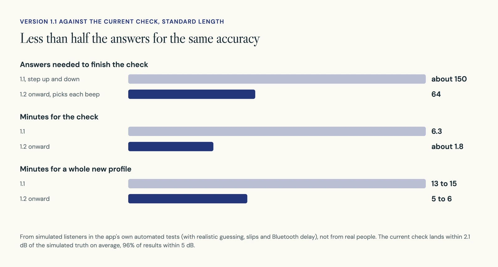
04 Decision 2
The curve follows the trend and lifts big gaps only partly
What you see: at the end of the check, a chart of the seven pitches for each ear. Lower on the chart means that band gets more help. Then the profile shows the curve made from it.
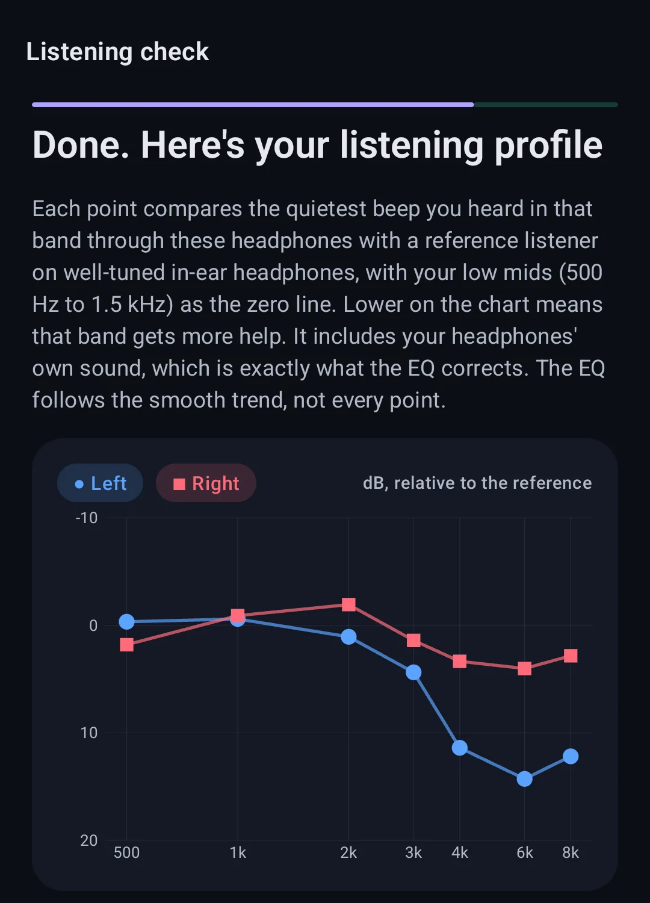

In the build: the profile never stores a curve. It stores answers and choices. Every curve, for the phone, for exports and for previews, is worked out from them each time.
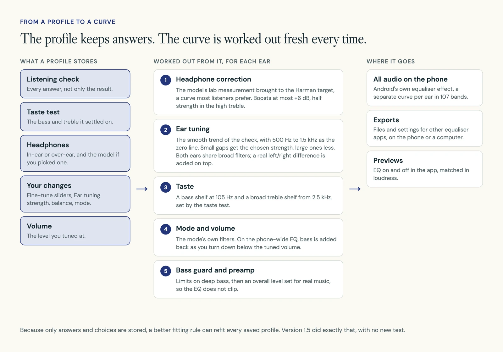
That choice paid off after version 1.4. I put the design through an evidence review in four parts: how the check measures, how results turn into sound, what headphone sound people prefer, and what similar products and regulators do.
The review found real faults. The fit took 500 Hz to 4 kHz as its zero line, so a result that slopes towards the treble was split around its own middle. That roughly doubled the treble tilt compared with NAL-R, a published fitting rule. A real difference between the two ears came through at only about half its size.
Version 1.5 changed the rule and refit every saved profile from its stored answers.
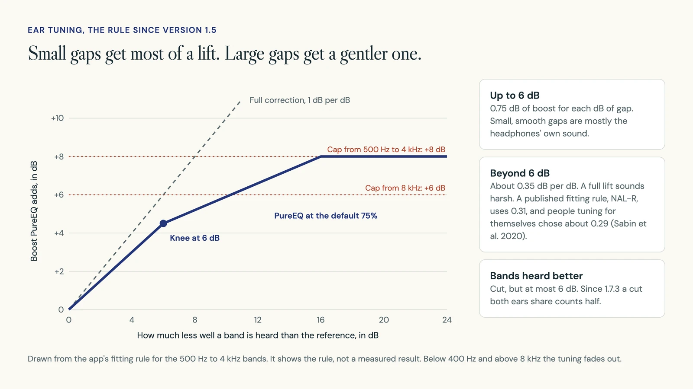
| Simulated case | Version 1.4 | Now |
|---|---|---|
| Normal listener: colour the EQ added by mistake | 0.42 dB | 0.34 dB |
| Normal listener: false difference between the ears | 0.39 dB | 0.14 dB |
| Listener hearing less treble (10 dB at 1 kHz to 35 dB at 4 kHz): treble tilt added | 11.3 dB | 8.0 dB |
| A real 15 dB difference between the ears: how far short it was read | 6.0 dB | 3.3 dB |
The table comes from the app's whole-pipeline tests, which run the full check with simulated listeners and compare the curve that comes out.
05 Decision 3
Taste is asked with blind pairs, starting from what most people like
What you see: A and B, the same music with two settings. You tap between them as often as you like, then pick A, B or Same. You never see what either setting is.
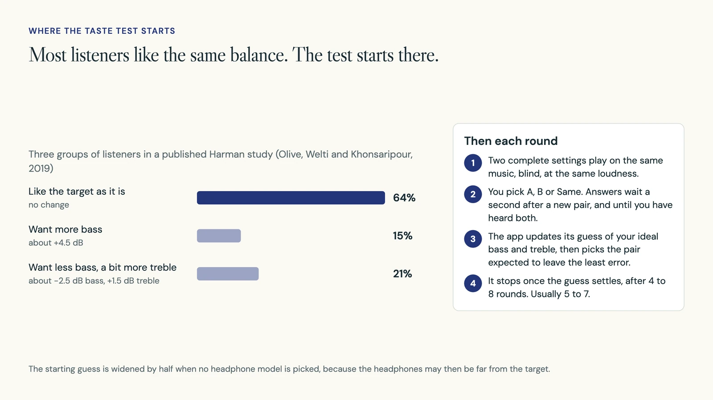
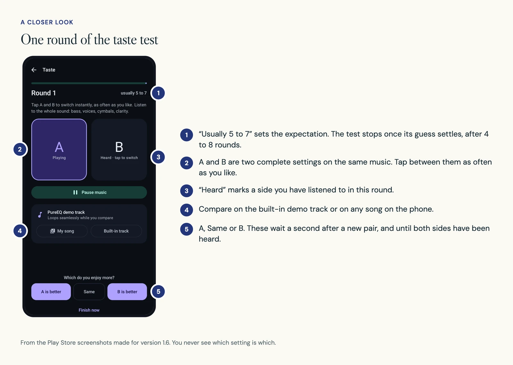
In the build: both settings in a pair are matched in loudness, measured on the song that is playing. Then you compare balance, not volume. The test learns two things only, bass and treble, and picks each next pair to leave the least doubt.
Version 1.1 halved its way through 12 rounds. Since 1.2 it usually needs 5 to 7. In 1.5 the treble control moved from a narrow shelf at 8 kHz to a broad one from 2.5 kHz, the shape real listeners adjusted in the research. The old one had no population data behind it.
I also fixed a problem in the flow. Before 1.5, rounds could get mixed up. Now each new pair is clearly marked, and the answer buttons wait until both sides have played.
06 Decision 4
Every suggestion can be heard, changed and put back
What you see: the result opens in Fine-tune, with EQ on and off, a song of your choice and named sliders. A slider you move shows the suggested value under it.
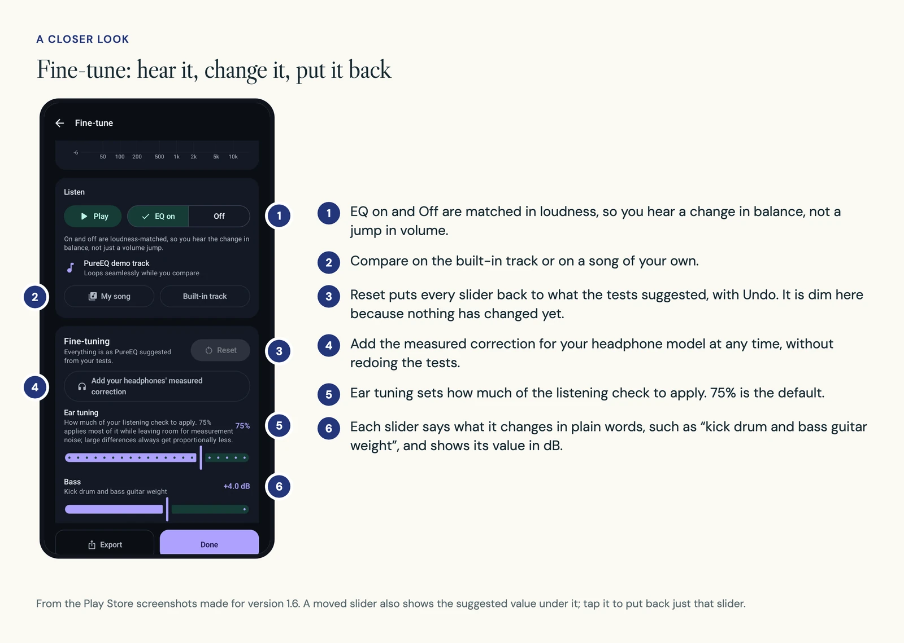
In the build: Reset needs something to return to. Version 1.0 did not keep the taste result, so its profiles had nothing to reset to. From 1.1 the profile keeps what the tests suggested, Reset returns there with Undo, and Redo taste test runs only the A/B part again while keeping the listening result.
Matching loudness took real work. An EQ that boosts makes music louder, so the app has to turn the whole sound down to keep the comparison fair and avoid clipping. PureEQ sets its overall level for real music, where one band at a time is loud, instead of for the curve's single highest point. A +6 dB treble lift then costs about 2 dB of level instead of 6.
07 Decision 5
Profiles follow the headphones, and the phone speaker stays untouched
What you see: one profile per pair of headphones, and a switch for each output: the phone speaker, each pair by name, a car.
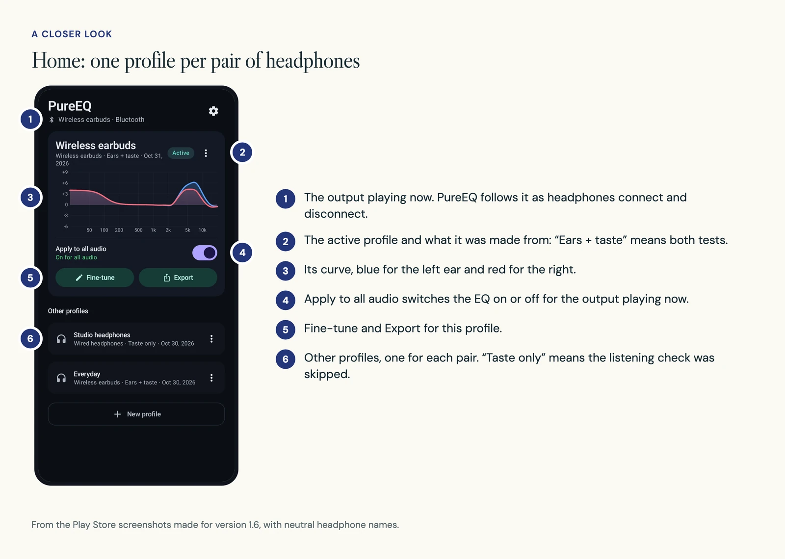
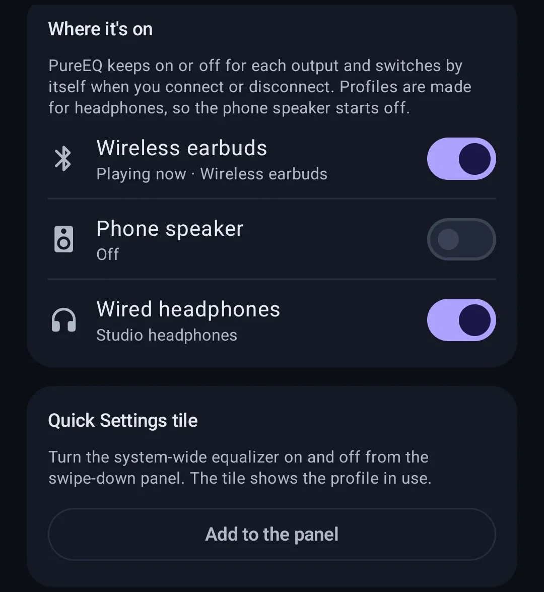
In the build: until 1.5.2 there was one switch. Unplugging your headphones left the phone speaker playing a headphone curve, quieter and duller. In 1.5.3 PureEQ started keeping on or off for each output, with the profile last used there. It re-reads the output when a device connects or playback starts.
A Quick Settings tile, in the swipe-down panel, turns it on or off. A long press opens a small menu to switch profile or open Fine-tune. In 1.7 profiles gained a mode for what the headphones are mostly used for.
| Mode | What it changes |
|---|---|
| Music | Nothing. The profile exactly as tuned. |
| General | A small lift for voices and a slow leveller that eases only very loud sound. |
| Gaming | Bass held down so explosions do not bury footsteps, +2 dB around footsteps, treble kept for direction, and half the delay, about 21 ms. |
| Voice | Less boom, clearer voices, Ear tuning at full strength and a leveller for loud and quiet talkers. |
| Auto | Follows what is playing: music as Music, speech as Voice, films as General, games as Gaming. It waits 3 seconds before switching. |
Every mode plays as loud as Music, so switching changes the balance and not the volume.
08 Decision 6
It is called a listening check, because it is not a hearing test
Until 1.5 the screens said "Hearing check" and "Hearing correction". The evidence review showed that those words make an app sound like a medical device, which PureEQ is not. Its results are relative: they shape the sound and do not measure hearing.
So in 1.5 the check became the Listening check and the correction became Ear tuning. The store listing, screenshots and release notes leave out words such as "hearing test" and "audiogram". The app says plainly that it is not a medical device, and no translation calls the check a hearing test.
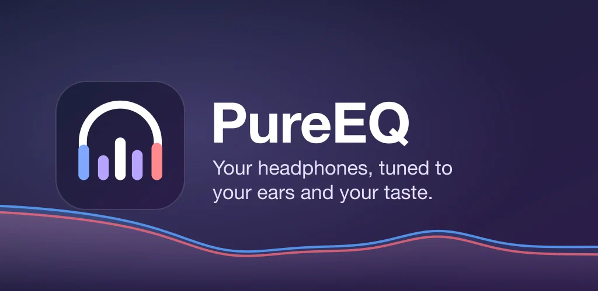
09 The build
Store the answers, work out everything else
Everything runs on the phone. There is no account, no analytics and no server of my own.
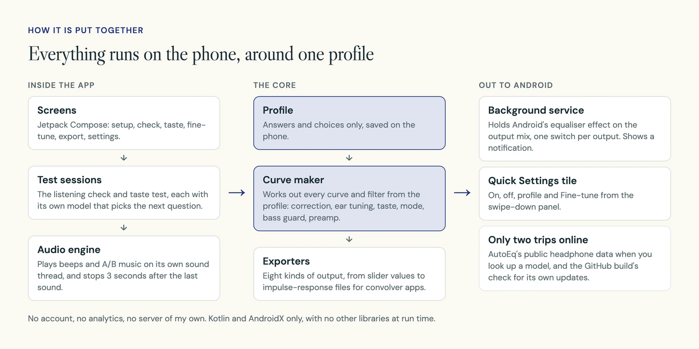
| Part | What I used |
|---|---|
| App | Kotlin and Jetpack Compose with Material 3. No libraries beyond AndroidX at run time |
| Sound for the tests | Android's low-level audio player, with its own thread for beeps and A/B music |
| Sound for all apps | Android's DynamicsProcessing effect, a separate curve per ear, held by a background service |
| Headphone data | AutoEq, an open database of over 6,000 measured headphones, fetched on the phone, never bundled |
| Updates | A GitHub build that checks size, checksum, package, version and signing key before it installs |
| Checks | 141 automated tests in 19 files, including whole-pipeline simulations |
- 67
- commits, 29 October to 3 November 2026
- 15
- versions in that history, 1.1 to 1.7.3
- 141
- automated tests
- 8
- kinds of export, from slider values to impulse-response files
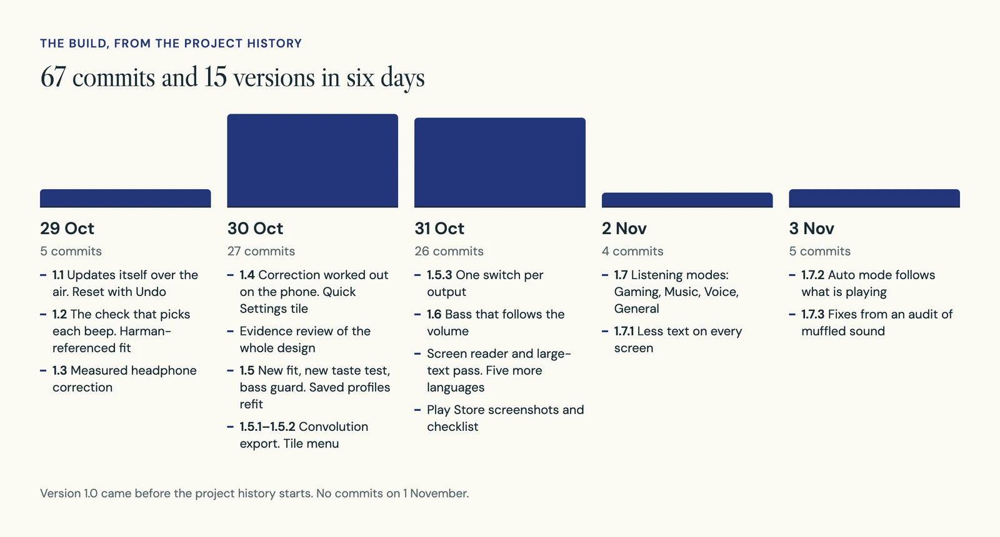
The hardest problems were in the sound path, not on the screens.
| Area | What went wrong, and what I changed |
|---|---|
| Muffled music | I noticed lossless music sounded muffled with PureEQ on. An audit found three causes. The tuning cut treble when room noise hid the low beeps, or when someone's treble hearing was keener than average: in 30 simulated checks of each case, the cut passed 2 dB in 13 and in 22. General's leveller turned a loud modern track down about 7 dB. The deepest band dropped in a steep step. Version 1.7.3 halved cuts the two ears share and fixed the other two. |
| Android's equaliser | It applies one gain per narrow slice of frequencies, with no smoothing between them. I gave every slice its own band below about 530 Hz and used 107 bands in all. Gaming's shorter frames have wider slices, so it needed its own layout, or each bass slice took its neighbour's gain. |
| Auto mode | Android tells an app only what kind of sound each player says it plays, nothing about which app it is. Most games say "music", so most games play as Music. The release notes tell people to pick Gaming for those. |
| Two ways to ship | The GitHub build updates itself, which Google Play forbids. The same app now builds twice, with and without the updater. |
10 Accessibility
Charts that speak, and buttons that stack at large text
A chart of curves means nothing to someone who cannot see it. In 1.6 each chart started describing itself to TalkBack, Android's screen reader, as the level for each ear at 100 Hz, 1 kHz, 4 kHz and 10 kHz.
- A row with a switch is one control that reads its own label, not a label and a separate switch.
- Sliders announce their name and value. Screen titles are headings, so a screen reader can jump between them.
- At large text, side-by-side buttons stack whenever a label would not fit, instead of breaking words. I checked the screens at 200% text.
- The app ships in English, Spanish, German, French, Portuguese (Brazil) and Hindi.
11 Where it stands
Version 1.7.3, with its accuracy shown only in simulation
PureEQ is at version 1.7.3. The first install is a download from its public page, and after that it updates itself. I wrote a Google Play launch checklist and store listing for a November 2026 release.
I use PureEQ every day myself.
These are not there yet:
- Every accuracy figure on this page comes from simulated listeners. The model's settings were tuned in simulation, not fitted to real people.
- No listening tests with other people, no measurements of the sound that reaches the ear, and no install or rating numbers.
- The system-wide EQ depends on the phone maker, and Auto mode has not been checked against what real apps report.
12 What is next
Test with real listeners and real phones
- Run the check twice on the same people to see how far results move, and compare the curve's shape with a calibrated booth test, ideally with an audiology research group.
- Watch room noise during the check, not only before it, and drop a beep that noise may have hidden.
- Play 50 or more modern tracks through typical profiles to confirm the level never clips.
- Ship the Play build and capture the 1.7 screens, TalkBack and large-text states for this page.
13 What I learned
Keep the answers, not the result
Storing every answer instead of a finished curve was the decision that kept paying. The 1.5 refit and the 1.7.3 treble fix both reached every saved profile without anyone redoing a test.
Simulation let me compare versions in numbers before I listened. It still missed the muffled sound until I heard it on a real phone, and then simulation showed why. I needed both.
Familiar chess. Very different information.